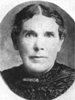
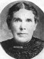
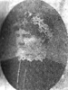
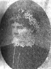

Jared Curtis Roundy Family Information and Photos
Home
Histories
Charts
Photos
Maps
Restricted
News
Info
Contact
| <--(return)-- |   | Shadrach Roundy and Betsy Quimby |
----> |  12 12 34 34Jared Curtis Roundy, Lovisa Jenne  , Eliza Snyder, Elizabeth Drake and EllenMaria White , Eliza Snyder, Elizabeth Drake and EllenMaria White |
6) Jared Curtis, born January 5, 1827, in Spafford. Married Lovise (also Lovisa) Jenne as his first wife in January 1852. He later married as plural wives Eliza J. Snyder, a first cousin to Lovise, in 1855, Ellen (called Nellie) M. White on December 20, 1883, and a somewhat older women, Elizabeth Jefford Drake Bellam Davis, on January 17, 1869 (or 1879). Elizabeth was a talented English women who is well known for her work in the Relief Society and other women's organizations and committees. Elisabeth was very successful in getting women's signatures on various petitions and the reading of "Memorials" etc. She traveled with, corresponded with and was a close friend of Eliza Roxcy Snow. Elizabeth was temporarily successful in her efforts to have the birthday of the Prophet Joseph Smith celebrated annually. Jared and Lovise had 9 children. Jared and Eliza had 1 child. Jared and Ellen had 5 children. Jared Curtis died accidentally on May 21 or 22, 1895, in or near St. David, Arizona. Jared was ordained a High Priest in 1856 and served as a ward bishop in Wanship, UT. A thumbnail sketch Jared's wife Elizabeth provided George Knapp Collins, for his history of Spafford, NY, states that Jared "took part in all of the Indian Wars, was at one time Sheriff of Summit County....and at one time was Justice of the Peace". Jared is named as a private in the Territorial Milita muster rolls of 1851 and 1852. In June of 1857, Jared served 8 days in Grant's Life Guards "in an expedition against the Utah Indians". Other sources claim Jared served as Sheriff of Summit County.
Lovisa, Evalyn and Jared Roundy
Lovisa and Jared Roundy with their granddaughter Fern Peck Robinson and her children.
Elizabeth Drake Roundy